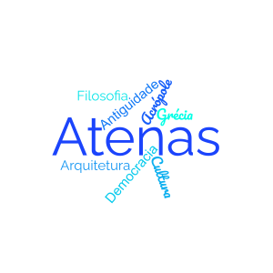

Atenas

Introdução
Uma pérola da antiguidade
Introdução
Localização
Multimedia
Informação
Este website irá agregar diversas informações sobre a histórica capital da Grécia, Atenas!
- Localização: Informações sobre a localização de Atenas no mundo!
- Multimédia: Vídeos, imagens e talvez até música relacionada a Atenas e a Grécia no geral! (Atualmente só tem vídeos)
- Informação: Esta página contém algumas estatísticas básicas atuais sobre a cidade!
